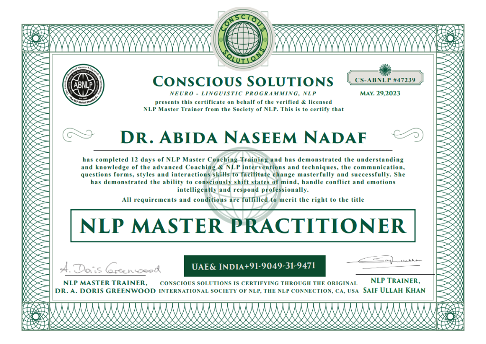
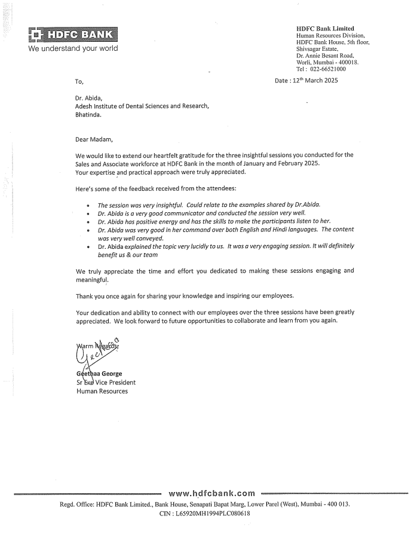
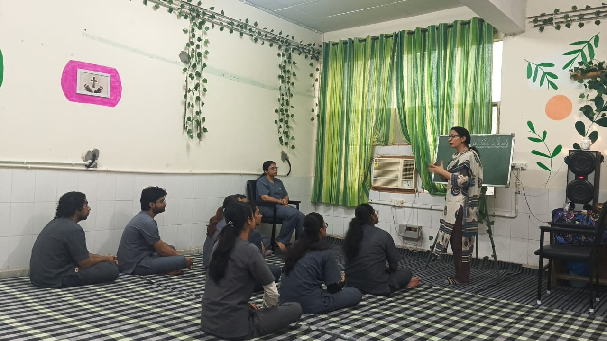
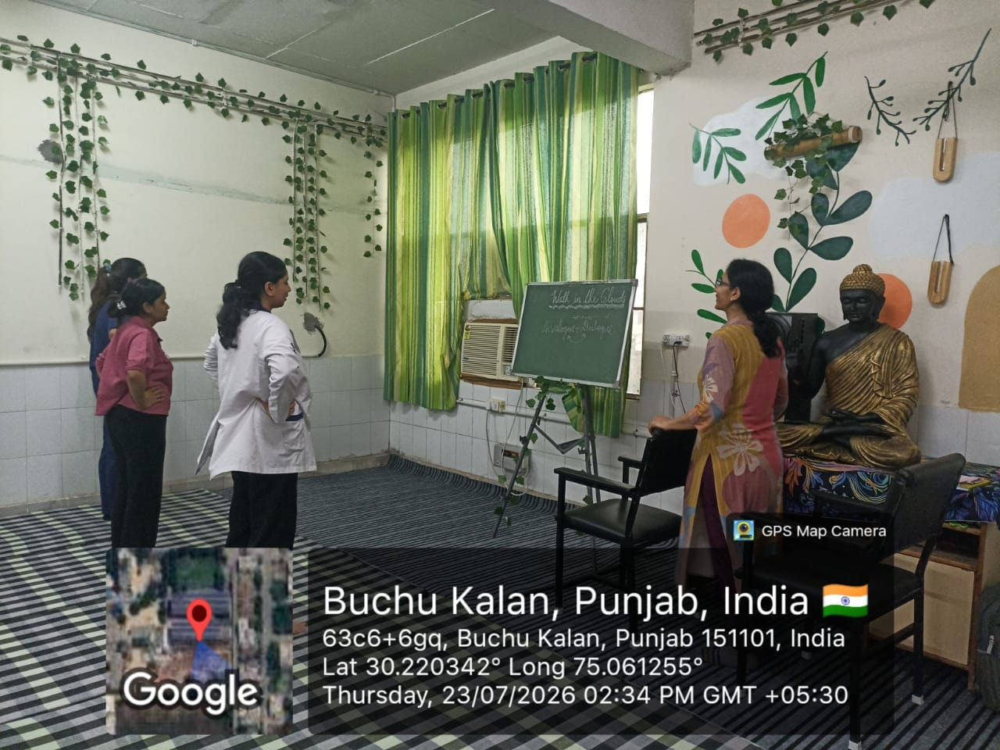
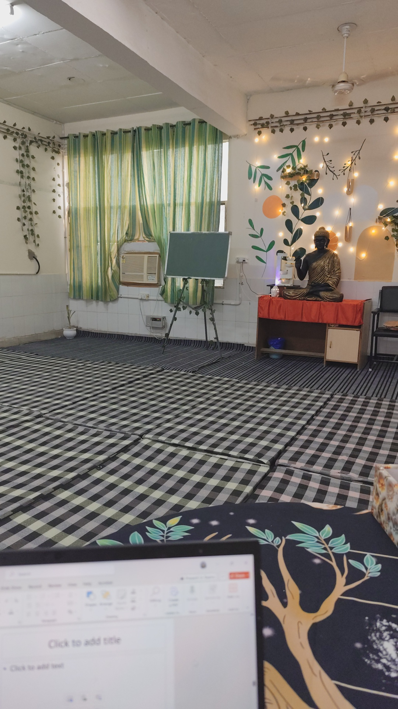
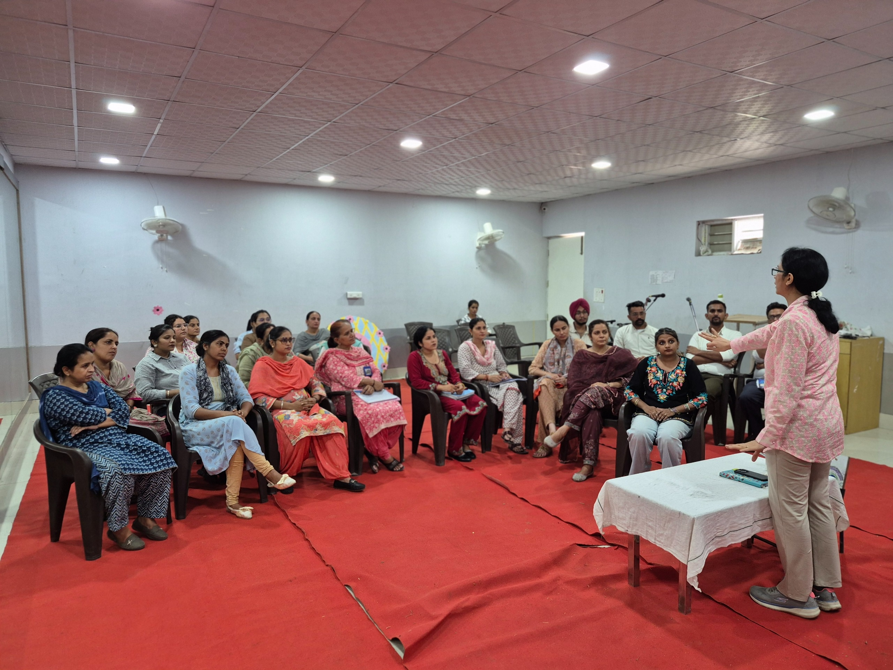
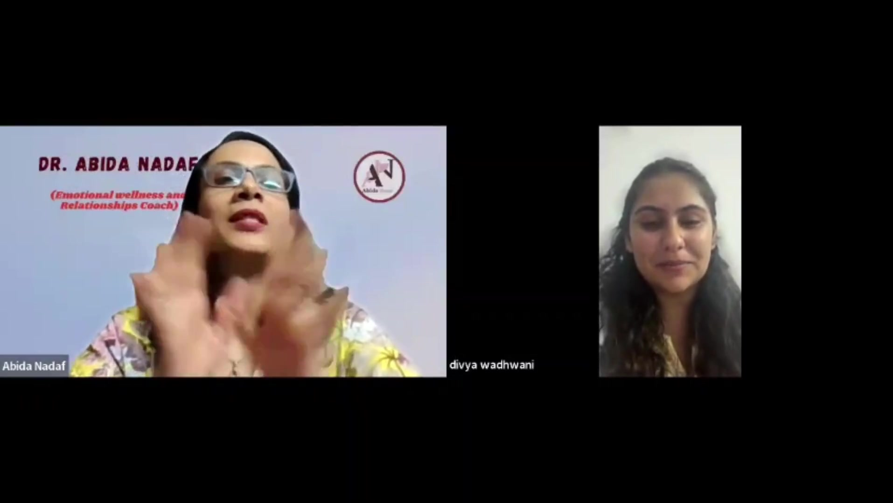

Put your peace of mind back in place.
Hello there! I'm Dr. Abida Nadaf. As an Emotional Wellness & Relationships Coach, I help women, couples, and students build healthier relationships with themselves and others.
For Women Feeling Drained & Over-Giving
Learn to say "NO" with love, dismantle chronic people-pleasing, and build loving boundaries without drowning in guilt or fear of rejection.

Dr. Abida Nadaf
Dentist • Certified NLP Master Coach
From Healing Myself to Helping Others Find Their Way
For the longest time, I believed that if you love people sincerely, they will love you back.
I was an obedient, sincere girl who genuinely wanted to be there for everyone. I believed in helping, adjusting, giving, and keeping people happy. But somewhere along the way, I became an over-giver, over-responsible and a people-pleaser — and I didn't even realise it. I was so busy taking care of everyone else that I slowly stopped taking care of myself.
The years when I lost myself:
During my graduation years, I went through a difficult phase. I struggled with Depression and OCD, but at that time, I didn't understand why I wasn't happy even when I was constantly helping the people around me. I kept wondering...
"I am doing so much for everyone. Then why don't I feel happy?"
The answer came much later. I had stopped prioritising myself. I had stopped taking responsibility for my own emotional well-being. And that was only the beginning of a journey that would take me through some of the most challenging — and transformative — years of my life.
After becoming a mother, I was overweight, struggling in my marriage and feeling lost about my career. And then came one moment that I can never forget....
I was just 30 years old. My son was around one and a half years old, and one day, because of severe back pain, I couldn't even lift him. I looked at myself and asked:
- "Do I want to live like this?"
- "Do I want my son to see his mother as someone who is always helpless and complaining?"
- "Do I want to continue living with this kind of health, this kind of emotional exhaustion and this kind of life?"
Something inside me screamed... NO.
And that "NO" became the beginning of my transformation.

"What is happening inside me?"
Learning to pause, look within, and take full responsibility for emotional healing became the foundation of everything I teach today.
I decided to take my life back.
I started counselling and began looking within. Instead of constantly asking, "Why are people doing this to me?", I started asking myself: "What is happening inside me?"
I began understanding my emotional patterns, working through my unhealed wounds and taking responsibility for my own healing. Slowly, I started changing — from the inside out. I worked on my physical health and reduced my weight. I began taking care of my mental and emotional well-being. I explored personal growth and attended several transformational programs.
One program, "You can Heal Your Life," created particularly a powerful shift in my mindset. For the first time, I truly understood how powerful — and sometimes miraculous — Healing can be. And gradually, I began to realise something beautiful. Perhaps everything I had gone through was preparing me to help someone else.
From healing myself to helping others:
In August 2020, I took my first step as a Life Coach. And since then, there has been no looking back. I started working with people who were struggling with their emotions, self-image, relationships, communication and their relationship with themselves.
What touched me the most was seeing how often people would say: "I never looked at it this way before."
The solutions were often simple. The difficult part was understanding what was really happening within. That became the Heart ❤️ of my work.
In 2023, I completed my NLP Master's training, which added another powerful dimension to my understanding of the human mind, emotions and behaviour. Over the years, I have conducted programs and coaching sessions around Self-Love, Peace of Mind, Emotional Wellness, Relationships, and People-Pleasing — including how to say NO with Love. And every client, every conversation and every transformation has taught me something new.
"The heart of my work is understanding what is truly happening within."
Bringing NLP master tools, clinical discipline, and heartfelt empathy to empower clients with lasting emotional resilience.
From a Dentist to a Coach — a journey I never planned
I am a Dentist by education. Becoming a coach was not something I had planned at the beginning of my life. But today, I see how beautifully the pieces of my journey fit together.
- My own struggles taught me compassion.
- My healing taught me courage.
- My experiences taught me emotional wisdom.
And my journey taught me that you don't have to remain the person your circumstances once made you.
In 2026, another beautiful chapter unfolded when I was given the opportunity to be associated with and take charge of Walk in Clouds – The Mind Wellness Centre, where I work with young students, faculty members, staff and others, creating a space for emotional wellness, self-awareness and mental well-being.
Looking back, I realise that the woman who once felt lost was slowly being prepared for the work I do today. And this is why I became a Coach.
Finding Your Way Back
I don't believe that people need someone to "fix" them. I believe that sometimes, they simply need someone to help them pause, look within, understand themselves and discover the strength that was already there.
If my journey has taught me anything, it is this:
You can lose yourself while loving others.
You can struggle and still find your way back.
You can start again — even when you think it is too late.
I was once the woman who didn't know how to prioritise herself. Today, I help women understand that taking care of yourself is not selfish. It is necessary. And if you are somewhere in your own journey feeling lost, overwhelmed, stuck or disconnected from yourself, I want you to know one thing: If I could find my way back to myself, so can you.
"If I could find my way back to myself, so can you."
You can lose yourself while loving others, and you can still find your way back. True healing begins the moment you give yourself permission to heal with kindness, patience, and courage.
This journey has been filled with challenges, learning, healing, faith and countless small moments of transformation. And today, I feel deeply grateful. Grateful for the woman I was. Grateful for the woman I became. And most of all, grateful for every person who allows me to be a small part of their journey.
This is my story.
And perhaps, in some little way, it can remind you that your story can
change too.
Dentist by Education
Bachelor of Dental Surgery( BDS) from MUHS,Nashik (Maharashtra)
Certified NLP Master Practitioner
Expertise in Neuro-Linguistic Programming to decode subconscious blind spots and rewrite negative self-talk (2023).
Incharge, Mind Wellness Centre
Walk in Clouds – The Mind Wellness Centre, Adesh Institute of Dental Sciences & Research, Bathinda Punjab (2026).
A Word from My Teachers & Mentors
The mentors who witnessed my transformation, guided my growth, and shaped the compassionate, resilient coach I am today.

Saif Ulla Khan
Senior Corporate Trainer | Executive Coach | Leadership Consultant | NLP Master Trainer
"As a trainer in my industry for over a decade, I have had the privilege of meeting many talented individuals. Abida, however, was undoubtedly one of the sharpest and most curious students I have taught. She possessed an exceptional desire not merely to learn, but to deeply understand and master every module."
"What stood out most was that her passion was never externally driven. It did not come from watching someone else make an impact; it grew from her own journey; her struggles, challenges and the resilience she developed along the way. She faced emotional difficulties, health challenges and social pressures, yet handled them all with remarkable grace and refused to give up."
"Those experiences did not weaken her; they shaped her. They inspired her to become the compassionate, resilient and deeply committed coach she is today."
"Among the thousands of students I have trained, there are some I know I will always remember. Abida will undoubtedly be one of them."

Dr. Mohinder Paul Sharma
Clinical Psychologist
“Courage is not the absence of fear; it is the decision to grow anyway. Dr. Abida has done that—and now she helps others do the same. I am honored to have witnessed her journey.”
"Dear Dr., your empathy is rooted in your own healing, and your growth is not finished. I am proud of the person you are becoming and the space you are creating for others."
With warm regards,
Dr. Mohinder Paul Sharma
(Clinical Psychologist)
3rd Teacher & Mentor
Words of guidance and mentorship from Dr. Abida's 3rd valued mentor will be featured here shortly.
Recognitions (2023 - 2026)

NLP Master Practitioner Certification
Certified by Conscious Solutions on behalf of the American Board of NLP (ABNLP) and the International Society of NLP, under Master Trainer Dr. A. Doris Greenwood and NLP Trainer Saif Ullah Khan.
Demonstrated mastery in advanced coaching interventions, conscious mind-state transformation, subconscious reframing, and emotional intelligence frameworks to help clients transcend limiting beliefs permanently.
HDFC Bank Official Appreciation
Formal Letter of Gratitude from HDFC Bank Limited (Human Resources Division, Mumbai), signed by Geethaa George, Senior Executive Vice President – HR, for conducting 3 impactful corporate sessions for the Sales & Associate workforce.
- "Session was very insightful. Could relate to real-life examples shared by Dr. Abida."
- "Exceptional command over both English & Hindi with engaging, positive energy."
- "Lucid topic explanation that directly benefits our mental health and team productivity."




Walk in Clouds – The Mind Wellness Centre
Incharge and lead coach at Walk in Clouds – The Mind Wellness Centre, Adesh Institute of Dental Sciences & Research, Bathinda, Punjab.
Providing students, faculty members, and campus healthcare staff with a dedicated, compassionate space for emotional wellness, nervous system regulation, self-awareness, and mental hygiene.
Clay India International School
Conducted Interactive life coaching and emotional empowerment session with Teachers at Clay India International School.
Guided Teachers through practical tools to deal with difficult & emotionally vulnerable students and how to maintain their own Mental health.

Who Do I Help?
The Over-Giver & People-Pleaser
Women feeling guilty whenever they take time for themselves, and terrified that saying "NO" will make them seem unloving.
Partners in Repetitive Cycles
Couples exhausted by circular arguments, passive-aggressive silence, or women preparing for marriage facing identity shifts.
Students & Young Minds
Students struggling under exam pressure, fear of failure, career confusion, and harsh self-criticism that freezes performance.
Through My Coaching Programs, I Help You:
Identify Subconscious Blind Spots
Pinpoint hidden patterns that cause exhaustion.
Overcome Negative Thoughts
Break repetitive spirals of self-doubt and emotional baggage.
Break Unhealthy Patterns
Stop ending up in the exact same arguments or silent standoffs.
Create Loving Boundaries
Communicate your limits with tenderness and complete composure.
Build Self-Confidence
Stop looking outside for approval and trust your intuition.
Restore Peace of Mind
Cultivate an internal calm that remains steady, even in chaos.
The 5 Pillars Worked On
Whether you embark on the 120-Day or 180-Day mentorship, our work is anchored in these five fundamental areas.
Emotions
Master emotional regulation, somatic tension release, and decode the triggers of chronic resentment so you no longer feel held hostage by emotional waves.
Self-Awareness
Relationships
Communication
Self-Transformation
My Coaching Programs
Group Masterclasses
Pre-Marital & Couple
"Take couples on a journey of Creating a New relationship with each other."
Addressing fears before union (Pre-Marital) or dismantling defensiveness to construct a refreshed relationship (Couples).
One-On-One Coaching
1) INNER HARMONY (120 Days)
2) RESET • REINVENT (180 Days)
Key Features of One-On-One Coaching:
On a private WhatsApp group for daily check-ins.
According to your specific outcomes. No rigid scripts.
Practical reframing protocols for independent use.
To recordings of your coaching sessions.
Client Testimonials
Real journeys, breakthroughs, and reflections from individuals and couples who reclaimed their self-worth, peace of mind, and relationships.
Video Testimonials
Watch clients share their personal journey in their own words

Client Words & Letters
Unfiltered messages of healing, self-discovery, and gratitude
"Abida has been a truly nurturing light, offering a safe, warm space where every one of my worries was met with deep and compassionate listening. Her incredible empathy and emotional intelligence helped turn even the most overwhelming moments into clear paths of self-discovery and growth. I deeply appreciate how she balanced these overwhelming moments with a soulful reminder to always be kind to myself along the way. Through her guidance, I've gained a toolkit of mindful practices that now feel like a quiet, constant strength in my daily life. More than just a coach, her authentic presence made this entire journey feel like walking toward a much brighter, more balanced version of myself."
Mrs. S. Mohan
Mentorship Client"I was living in so much of discomfort and self hatred. Ever since I have started working with Abida she has helped me regain my self-love and self-respect. She has made things easier for me to understand. Now I am out of the overthinking and anxiety and focus on growth. Abida is a great listener, teacher and a great friend. She listens with patience and tries to teach. She takes her work more seriously than we take our emotional health."
Miss S. Majumdar
Coaching Client"I am a big fan of you Abida ji, as I say you are a God sent angel in my life. The tools and learnings added so much value to the situations I am facing or have faced in my life. All the explanations and examples were offered with so much clarity, indeed helped me understand the concepts better. I would love to copy you someday and become the best coach just like you one day, I have a long way to go :)"
Mrs. Priyanka
Life Coaching Client"Dear Abida, Talking to you always helps me get back on track. As you know, I recently became a mom again, but this time I am not falling into the trap of self-criticism or feeling like a victim. I finally broke my perfectionist mindset. When I struggled with the JPMR technique, you told me, 'Who asked you to do it perfectly? Just do it.' That single line is still helping me today. I overcame my limiting beliefs and feel so good about myself. I am truly grateful for my decision to invest in your mentorship."
Surbhi
Mentorship ClientWhich part of the program was most helpful for you?
"The part that helped me the most was understanding my triggers and learning how to handle them calmly. It made a big difference in my relationships and career."
What qualities of Abida as a coach did you appreciate the most?
"What I loved most about Abida was how she made me feel seen and understood. Her warmth and insight helped me open up and truly work on myself without fear."
1-on-1 Coaching Graduate
Verified Program ReviewReady to reclaim your peace?
Fill out the form below to instantly generate a booking request sent directly to Dr. Abida's executive WhatsApp line.